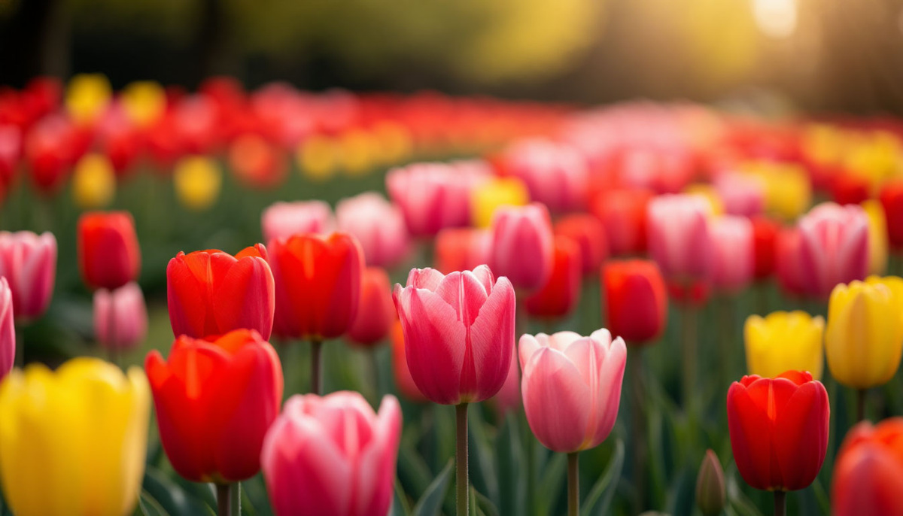

Тюльпан — самый недооценённый цветок в букетах. Его дарят по инерции: дёшево, весна, не розы. А на самом деле у тюльпана одна из самых интересных историй среди всех цветов. И одна из самых запутанных символик — потому что в разных странах он означает прямо противоположные вещи.
Разберёмся, что на самом деле говорит тюльпан и кому его можно дарить без риска.
Откуда пришёл тюльпан
Тюльпан — не европейский цветок. Его родина — Центральная Азия, территория современных Казахстана, Турции и Ирана. В дикой природе там до сих пор растут десятки видов тюльпанов, которые мы привыкли видеть только в оранжереях.
В Европу тюльпан попал в XVI веке. И вот с этого момента начинается самая странная история в мире цветов. В Голландии тюльпан стал предметом настоящего помешательства. В 1630-х годах за одну луковицу редкого сорта платили больше, чем за дом в центре Амстердама. Это явление вошло в историю как «тюльпаномания» — первый в мире биржевой пузырь.
Что это значит для нас? Когда вы дарите тюльпан, вы дарите цветок, который когда-то стоил дороже недвижимости. Это уже интересно.
Что означает цвет
У тюльпанов, как и у роз, значение зависит от цвета. Только здесь всё тоньше.
Красный тюльпан — любовь и страсть. Работает почти как красная роза, но мягче. Подходит, если хотите признаться, но не готовы к «тяжёлому» жесту.
Жёлтый тюльпан — здесь важный момент. В отличие от жёлтой розы, жёлтый тюльпан в России не считается символом разлуки. Это радость, солнце, хорошее настроение. Хороший выбор для дружеского букета.
Белый тюльпан — чистота, новое начало, прощение. Часто дарят в знак примирения или на начало отношений.
Розовый тюльпан — нежность, симпатия, забота. Универсальный вариант, подходит почти всем.
Фиолетовый тюльпан — уважение, восхищение, иногда — тайна. Хорош для старшего поколения.
Оранжевый тюльпан — энергия, радость, тепло. Идеально для подарка коллеге или другу.
Кому и когда дарить тюльпаны
Тюльпаны — один из самых универсальных цветов. Они подходят почти для любого повода, кроме, пожалуй, траурного.
Маме или бабушке — на 8 марта или день рождения. Особенно хороши розовые, кремовые, фиолетовые. Красные лучше не дарить — они всё-таки про романтику.
Девушке или жене — на свидание, на годовщину, просто так весной. Красные и розовые работают идеально. Один тюльпан — «ты у меня одна».
Коллеге или подруге — на день рождения, на 8 марта. Жёлтые, оранжевые, розовые. Это дружеский букет, без намёков.
Учителю или врачу — в знак уважения. Красные не стоит. Лучше спокойные тона: белые, розовые, кремовые.
Себе — просто потому что весна. Это тоже работает.
Сколько тюльпанов дарить
С числом тюльпанов есть свои традиции.
- 1 тюльпан — «ты единственная», мягкий романтический жест
- 3 тюльпана — «я люблю тебя», классика
- 5 тюльпанов — «ты моя», уважение и любовь
- 7 тюльпанов — традиция, классический букет
- 9 тюльпанов — «я тебя обожаю»
- 11 тюльпанов — «ты моя навсегда»
- 15 тюльпанов — «я перед тобой в долгу»
- 25 тюльпанов — на юбилей
- 101 тюльпан — самый сильный жест
Как и с любыми цветами — чётное число в России дарят только на кладбище. Для живых — нечётное.
Тюльпаномания: история, о которой стоит знать
Эта история стоит отдельного абзаца — потому что она объясняет, почему тюльпан стал символом.
В 1634-1637 годах в Голландии началась настоящая лихорадка. Луковицы тюльпанов продавали на бирже, как акции. Цены росли каждый день. Люди продавали дома, землю, драгоценности — чтобы купить одну луковицу редкого сорта. Одна луковица сорта Semper Augustus стоила как карета с лошадьми.
А потом рынок рухнул. За одну ночь цены упали в сотни раз. Тысячи людей разорились. Это был первый в истории биржевой пузырь — и его символом стал цветок.
Что это значит для нас? Что тюльпан — это не просто «весенний цветок». Это символ того, как простое может стать бесценным. И как бесценное может оказаться ничем.
Что сказать, когда вручаете
Тюльпаны не требуют долгих речей. Но одна фраза усилит их значение.
«Этот тюльпан — потому что ты у меня одна».
«Розовые — потому что ты у меня самая нежная».
«Жёлтые — просто чтобы у тебя было хорошее настроение».
«Эти красные — потому что я до сих пор влюблён».
Одна фраза — и букет из «просто цветов» становится посланием.

В итоге
Тюльпан — цветок с двойной природой. Простой, весенний, доступный — и одновременно с историей, которая потрясла Европу. Символ любви, дружбы, прощения, радости. И символ того, как легко люди теряют голову от чего-то красивого.
И если задуматься — это и есть смысл тюльпана. Простое может быть глубоким. Дешёвое может быть бесценным. Один цветок может сказать то, что не скажут слова.
А вы какие тюльпаны любите больше — красные, розовые или жёлтые? И знали ли вы, что жёлтые — не к разлуке? Напишите в комментариях — мне интересно.